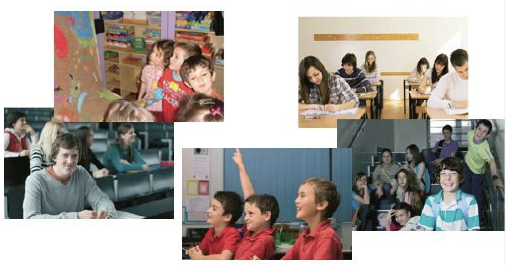

wagary | wykład | wymagający | juwenalia | studniówka | lektorat | matura | sprawdzian | mundurek | ściągać | indeks | kujon | oblać egzamin
Krok po kroku - 2
06_B - Przedszkole, szkoła, studia
Komunikacja: móiwenie na temat edukacji i wykształcenia
Słownistwo: przymiotniki opisujące ludzi charakter
Gramatyka: mianownik L.mn. przymiotników męskoosobowych
Nowe słowa - temat 6 >>>
1. Proszę czytać. [206B1]

1. W jakim wieku są osoby na zdjęciach?
To dzieci i młodzież. Na fotografii z przedszkola dzieci mają może cztery, a może pięć lat. Na fotografii ze szkoły podstawowej mają siedem albo osiem lat. Na fotografii z gimnazjum dzieci mają trzynaście albo czternaście lat. Licealiści mają szesnaście albo siedemnaście lat. Studenci mają ponad dwadzieścia lat.
2. Jak wyglądają?
Wszyscy są młodzi i uśmiechnięci. Sądzę, że są zadowoleni. Licealiści są skoncentrowani. Przedszkolaki są zaciekawione obrazkiem.
3. W co są ubrane?
Przedszkolaki są ubrane na kolorowo. Jedna dziewczynka ma bluzkę w kratkę. Dzieci ze szkoły podstawowej mają identyczne czerwone polówki – to chyba jest ich mundurek. Gimnazjaliści nie mają mundurków, chłopiec na pierwszym planie ma podkoszulek w grube pasy. Licealiści noszą spokojne stonowane kolory koszul i bluz. Student na pierwszym planie ma szary sweter i brązowy podkoszulek.
4. Co robią?
Przedszkolaki oglądają obrazek, który namalowały. Dzieci z podstawówki słuchają nauczyciela, jeden chłopiec zgłasza się do odpowiedzi. Gimnazjaliści siedzą na schodach i na coś czekają. Może mają przerwę w szkole. Licealiści piszą test. Studenci słuchają wykładu.
5. Jak myślisz, czym się interesują?
Wydaje mi się, że przedszkolaki lubią bawić się i rysować. Chłopcy ze szkoły podstawowej na pewno interesują się piłką nożną. Gimnazjaliści interesują się sportem, grami komputerowymi i różnymi znanymi osobami, np. aktorami, piosenkarzami, sportowcami. Licealiści mają już bardzo indywidualne zainteresowania, może interesują się literaturą, może historią albo matematyką, może językami obcymi. Studenci zwykle interesują się aktualnościami politycznymi, kulturą, ekonomią.
Tłumaczenieź
1. Сколько лет людям на фотографиях?
Это дети и молодежь. На фотографии из детского сада детям, может быть, четыре, а может, пять лет. На фотографии из начальной школы им семь или восемь лет. На фотографии из гимназии детям тринадцать или четырнадцать лет. Лицеисты — шестнадцать или семнадцать лет. Студентам — больше двадцати лет.
2. Как они выглядят?
Все они молодые и улыбаются. Думаю, что они довольны. Лицеисты сосредоточены. Дети из детского сада заинтересованы картинкой.
3. Во что они одеты?
Дети из детского сада одеты в яркую одежду. У одной девочки блузка в клетку. Дети из начальной школы носят одинаковые красные поло — наверное, это их форма. У гимназистов нет формы, у мальчика на переднем плане футболка в широкую полоску. Лицеисты носят спокойные, приглушённые цвета рубашек и толстовок. У студента на переднем плане серая кофта и коричневая футболка.
4. Что они делают?
Дети из детского сада смотрят на картинку, которую нарисовали. Дети из начальной школы слушают учителя, один мальчик тянет руку, чтобы ответить. Гимназисты сидят на ступеньках и чего-то ждут. Может быть, у них перемена. Лицеисты пишут тест. Студенты слушают лекцию.
5. Как ты думаешь, чем они интересуются?
Мне кажется, что дети из детского сада любят играть и рисовать. Мальчики из начальной школы точно интересуются футболом. Гимназисты интересуются спортом, компьютерными играми и разными известными людьми, например, актёрами, певцами, спортсменами. Лицеисты уже имеют очень индивидуальные интересы — может, их интересует литература, может, история или математика, может, иностранные языки. Студенты обычно интересуются политическими событиями, культурой, экономикой.
indeks - зачётная книжка
juwenalia - день студента
kujon - ботан
oblać egzamin - провалить экзамен
studniówka
школьный выпускной
ściągać - скачивать
lektorat
курс иностранного языка
matura
выпускные экзамены в школе
wykład - лекция
wagary - прогулы
sprawdzian - контрольная работа
mundurek - школьная форма
wymagający - требователен
ściągać - это многозначное слово в польском языке.
- ✅ 1. Списывать, жульничать (в контексте школы)
ściągać – używać niedozwolonych pomocy podczas sprawdzianu lub egzaminu.
üìò Ucze≈Ñ ściąga≈Ç na teście i dosta≈Ç uwagę od nauczyciela.
(Ученик списывал на тесте и получил замечание от учителя.)
- ✅ 2. Скачивать (файлы из интернета)
ściągać – pobierać pliki z internetu.
üìò Muszę ściągnƒÖƒá ten program z oficjalnej strony.
(Мне нужно скачать эту программу с официального сайта.)
- ✅ 3. Снимать (одежду, предметы)
ściągać – zdejmować coś z ciała lub z powierzchni.
üìò Ściągnij buty przed wejściem do domu.
(Сними обувь перед входом в дом.)
2. Proszę uzupełnić. [206B2]
- indeks - oficjalny dokument studenta, gdzie są wyniki egzaminów
- ............................. - tradycyjne święto uniwersytetu, kiedy studenci organizują różne atrakcyjne imprezy
- ............................. - uczeń albo student, który cały czas się uczy i niczym innym się nie interesuje
- ............................. - egzamin dojrzałości, który kończy szkołę średnią
- ............................. - kiedy ktoś ucieka ze szkoły, to idzie na...
- ............................. - przepisywać nielegalnie z książki albo od kolegi w czasie testu
- ............................. - test
- ............................. - ktoś, kto ma wysokie oczekiwania, wymagania, np. nauczyciel
- ............................. - bal sto dni przed maturą
- ............................. - nie zdać egzaminu
- ............................. - zajęcia na uniwersytecie, kiedy profesor mówi, a studenci słuchają
- ............................. - strój szkolny, uniform
- ............................. - lekcja języka na uniwersytecie
Odpowiedź
- indeks - oficjalny dokument studenta, gdzie są wyniki egzaminów
- juwenalia - tradycyjne święto uniwersytetu, kiedy studenci organizują różne atrakcyjne imprezy
- kujon - uczeń albo student, który cały czas się uczy i niczym innym się nie interesuje
- matura - egzamin dojrzałości, który kończy szkołę średnią
- wagary - kiedy ktoś ucieka ze szkoły, to idzie na...
- ściągać - przepisywać nielegalnie z książki albo od kolegi w czasie testu
- sprawdzian - test
- wymagający - ktoś, kto ma wysokie oczekiwania, wymagania, np. nauczyciel
- studniówka - bal sto dni przed maturą
- oblać egzamin - nie zdać egzaminu
- wykład - zajęcia na uniwersytecie, kiedy profesor mówi, a studenci słuchają
- mundurek - strój szkolny, uniform
- lektorat - lekcja języka na uniwersytecie
2-1. Proszę uzupełnić. [206B2_1]
JUWENALIA
Juwenalia, czyli tradycyjne Dni (student) Studenta organizowane są w (maj) .................... na pamiątkę założenia Uniwersytetu (Jagielloński) ........................................................................... (12 V 1364 roku). Święto to trwa zwykle kilka (dzień) ............... . Pierwszego (dzień) .................... prezydent miasta przekazuje studentom symboliczne klucze do (brama - l.mn.) .................... Krakowa. Stare Miasto pełne jest poprzebieranych studentów, którzy w (barwny Korowód) ......................................................................................... idą na (rynek) ......................... . Juwenalia organizowane są w wielu (miasto akademickie) ........................................................................................................ w Polsce. W (czas) .............................. święta odbywają się imprezy kulturalne i sportowe, koncerty, konkursy i wybory Najmilszej Studentki i (najmilszy student) ................................................................................................... .
Odpowiedź
JUWENALIA
Juwenalia, czyli tradycyjne Dni (student) Studenta organizowane są w (maj) maju na pamiątkę założenia Uniwersytetu (Jagielloński) Jagiellońskiego (12 V 1364 roku). Święto to trwa zwykle kilka (dzień) dni. Pierwszego (dzień) dnia prezydent miasta przekazuje studentom symboliczne klucze do (brama - l.mn.) bram Krakowa. Stare Miasto pełne jest poprzebieranych studentów, którzy w (barwny Korowód) barwnym Korowodzie idą na (rynek) rynek. Juwenalia organizowane są w wielu (miasto akademickie) barwnym Korowodzie w Polsce. W (czas) czasie święta odbywają się imprezy kulturalne i sportowe, koncerty, konkursy i wybory Najmilszej Studentki i (najmilszy student) Najmilszego Studenta.
3. Ответьте на вопросы. [206B3]
- Czy dzieci powinny chodzić do przedszkola?
- Czy masz dobre wspomnienia ze szkoły?
- Jakie były twoje ulubione przedmioty?
- Czy chodziłeś na wagary?
- Czy to dobrze, kiedy nauczyciel jest wymagający?
- Co sądzisz o mundurkach w szkole?
- Czy jest w twoim kraju taka tradycja, jak studniówka?
Odpowiedź
- Czy dzieci powinny chodzić do przedszkola?
Według mnie to bardzo ważne, żeby dzieci chodziły do przedszkola. Uczą się wtedy, jak bawić się i rozmawiać z innymi dziećmi. Poznają wiele nowych rzeczy. Będą potrafiły zachowywać się w grupie.
- Czy masz dobre wspomnienia ze szkoły?
Teraz, kiedy jestem na emeryturze, wydaje mi się, że szkoła to był cudowny czas w moim życiu. Ale pamiętam, że nie zawsze było „różowo”. Czasem miałem problemy z nauką i nauczyciele denerwowali się na mnie.
- Jakie były twoje ulubione przedmioty?
Mój ojciec był matematykiem, więc to naturalne, że matematyka była moim ulubionym przedmiotem. Lubiłem też fizykę i geografię.
- Czy chodziłeś na wagary?
O tak, i potem miałem problemy.
- Czy to dobrze, kiedy nauczyciel jest wymagający?
Uważam, że tak. Taki nauczyciel nauczy więcej, a uczniowie trochę się go boją, ale zwykle lubią go bardzo.
- Co sądzisz o mundurkach w szkole?
W moich czasach mundurki były standardem. Może dobrze, że wróciły do szkoły.
- Czy jest w twoim kraju taka tradycja, jak studniówka?
Tak. Do dziś wspominam mój bal na zakończenie szkoły.
3_1. Прослушайте и дополните. [206B3_1]
A: Czy pana zdaniem dzieci powinny chodzić do przedszkola?
B: Według mnie to bardzo , żeby dzieci chodziły do przedszkola. Uczą się wtedy, bawić się i rozmawiać z innymi dziećmi. wiele nowych rzeczy. Będą zachowywać się w grupie.
A: Czy ma pan dobre ze szkoły?
B: Teraz, kiedy jestem na emeryturze, wydaje się, że szkoła to był cudowny czas w moim . Ale pamiętam, że nie zawsze było ,,różowo". Czasem miałem problemy z i nauczyciele denerwowali się na mnie.
5. Taki mały, a taki szybki!
, .
6. Który student pisze egzamin?
?
7. Tamten chirurg jest najlepszy.
.
8. Ten sportowiec był pierwszy.
.
9. Ten Holender był drugi.
.
10. Czyj sąsiad zorganizował to spotkanie?
?
11. Mój dziadek lubił podróżować.
.
12. Twój profesor jest bardzo wymagający.
.
13. Nasz lekarz jest sympatyczny.
.
14. Wasz wujek jest skąpy.
.
- Dobrzy nauczyciele są cierpliwi.
- Moi synowie są nieśmiali.
- Ci fachowcy są bardzo starzy.
- Tacy mali, a tacy szybcy.
- Którzy studenci piszą egzaminy?
- Tamci chirurdzy są najlepsi.
- Ci sportowcy byli pierwsi.
- Ci Holendrzy byli drudzy.
- Czyi sąsiedzi zorganizowali te spotkania?
- Moi dziadkowie lubili podróżować.
- Twoi profesorowie są bardzo wymagający.
- Nasi lekarze są sympatyczni.
- Wasi wujkowie są skąpi.
4. Пожалуйста, преобразуйте предложения – из единственного числа во множественное. [205B4]
1. Czy twój nauczyciel jest dobry?
Czy twoi nauczyciele są dobrzy?
2. Ten dziennikarz jest zdolny i pracowity
i .
3. Tamten Francuz jest wysoki i elegancki.
i .
4. Jaki jest wasz nowy kolega?
.
5. Człowiek na fotografii był chudy, stary i siwy.
na , i .
6. On był wyższy, grubszy, ale słabszy.
, , ale .
7. Dlaczego nasz syn jest taki szczupły?
?
8. To jest młody i utalentowany pisarz.
i .
9. On jest trochę chory i zmęczony.
i .
10. Taki duży, a taki głupi!
, a !
- Ci dziennikarze są zdolni i pracowici.
- Tamci Francuzi są wysocy i eleganccy.
- Jacy są wasi nowi koledzy?
- Ludzie na fotografii byli chudzi, starzy i siwi.
- Oni byli wyżsi, grubsi, ale słabsi.
- Dlaczego nasi synowie są tacy szczupli?
- To są młodzi i utalentowani pisarze.
- Oni są trochę chorzy i zmęczeni.
- Tacy duzi, a tacy głupi!
4_1. Пожалуйста, преобразуйте предложения – из единственного числа во множественное. [205B4_1]
1. Ten dyrektor jest sumienny i oszczędny
Ci dyrektorzy są sumienni i oszczędni.
2. Ten Hiszpan jest energiczny i wesoły.
i .
3. Mój nowy kolega to zamknięty człowiek.
to .
4. Ten jeden lektor jest roztargniony.
.
5. Ten mnich jest sumienny i pracowity.
i .
6. Twój brat to przystojny i ujmujący mężczyzna.
to i .
7. Ten maszynista jest chory i zmęczony.
i .
8. Ten pierwszy dentysta jest droższy, ale dokładniejszy.
, ale .
- Ci Hiszpanie są energiczni i weseli.
- Moi nowi koledzy to zamknięci ludzie.
- Ci dwaj lektorzy są roztargnieni.
- Ci mnisi są sumienni i pracowici.
- Twoi bracia to przystojni i ujmujący mężczyźni.
- Ci maszyniści są chorzy i zmęczeni.
- Ci pierwsi dentyści są drożsi, ale dokładniejsi.
4_2. Пожалуйста, преобразуйте предложения – из единственного числа во множественное. [205B4_2]
1. Ten wandal jest bezczelny i bezmyślny.
Ci wandale są bezczelni i bezmyślni.
2. Tamten złodziej był sprytny i szybki.
i .
3. Ten jeden chuligan był bardzo młody.
.
4. Tamten przestępca był niebezpieczny.
.
5. Pirat był opalony i barczysty.
i .
6. Ten drugi włamywacz był starszy i silniejszy.
i .
7. Pierwszy bandyta był wysoki i muskularny.
i .
8. Ten oszust był sprytny, bystry i pomysłowy.
, i .
- Tamci złodzieje byli sprytni i szybcy.
- Ci dwaj chuligani byli bardzo młodzi.
- Tamci przestępcy byli niebezpieczni.
- Piraci byli opaleni i barczyści.
- Ci drudzy włamywacze byli starsi i silniejsi.
- Pierwsi bandyci byli wysocy i muskularni.
- Ci oszuści byli sprytni, bystrzy i pomysłowi.
4_4. Prawda albo falsz. [205B4_4]
Впишите окончания.
1. chud zi
2. szczup
3. otwar
4. zamknię
5. młod
6. star
7. towarzys
8. aroganc
9. mi
10. pracowi
11. początkują
11. boga
- chudzi
- szczupli
- otwarci
- zamknięci
- młodzi
- starzy
- towarzyscy
- aroganccy
- mili
- pracowici
- początkujący
- bogaci
5. Пожалуйста, преобразуйте предложения – из множественного числа во единственное. [205B5]
1. Nasi lekarze są bardzo dobrzy.
Nasz lekarz jest bardzo dobry.
2. Holendrzy byli pierwsi na mecie.
na .
3. Wasi znajomi są towarzyscy.
.
4. Ci ludzie są bardzo ubodzy.
.
5. Którzy panowie są źli i niezadowoleni?
i ?
6. Czy ci artyści są interesujący?
.
7. Oni są drudzy czy trzeci w kolejce?
czy w ?
8. Tamci chirurdzy są doskonali.
.
- Holender był pierwszy na mecie.
- Wasz znajomy jest towarzyski.
- Ten człowiek jest bardzo ubogi.
- Który pan jest zły i niezadowolony?
- Czy ten artysta jest interesujący?
- On jest drugi czy trzeci w kolejce?
- Tamten chirurg jest doskonały.
5_1. Пожалуйста, преобразуйте предложения – из множественного числа во единственное. [205B5_1]
1. Francuscy malarze zorganizowali wystawę.
Francuski malarz zorganizował wystawę.
2. Przewidujący Szwajcarzy kupili udziały w firmach.
w .
3. Belgijscy Naukowcy odkryli nowe gatunki owadów.
.
4. Młodzi i pełni entuzjazmu Europejczycy wygrali zawody.
i zawody.
5. Oszczędni przedsiębiorcy zredukowali wydatki.
w .
6. Solidni i pracowici kursanci dostali nagrody.
i .
7. Ci drudzy kandydaci byli bardziej interesujący.
.
8. Powodzianie byli zrozpaczeni.
.
- Przewidujący Szwajcar kupił udziały w firmie.
- Belgijski naukowiec odkrył nowy gatunek owada.
- Młody i pełen entuzjazmu Europejczyk wygrał zawody.
- Oszczędny przedsiębiorca zredukował wydatki.
- Solidny i pracowity kursant dostał nagrodę.
- Ten drugi kandydat był bardziej interesujący.
- Powodzianin był zrozpaczony.
5_2. Пожалуйста, преобразуйте предложения – из множественного числа во единственное. [205B5_2]
1. Węgrzy byli solidarni i zmotywowani.
Węgier był solidarny i zmotywowany
2. Święci to słudzy boży.
to .
3. Ci, którzy przyszli pierwsi, zajęli najlepsze miejsca.
, , .
4. Wasi uroczy kuzyni przyjechali wczoraj.
zawody.
5. Czyi są ci piegowaci chłopcy?
?
6. Ci strażacy byli czwarci czy piąci na mecie?
czy na ?
7. Tamci policjanci są doświadczeni i zdyscyplinowani.
jest i .
8. Ci drudzy mechanicy są brudni i zmęczeni.
i .
- Święty to sługa boży.
- Ten, który przyszedł pierwszy, zajął najlepsze miejsce.
- Wasz uroczy kuzyn przyjechał wczoraj.
- Czyj jest ten piegowaty chłopiec?
- Ten strażak był czwarty czy piąty na mecie?
- Tamten policjant jest doświadczony i zdyscyplinowany.
- Ten drugi mechanik jest brudny i zmęczony.
ksiądz - католический священник

książę - князь / принц

zwierzę - животное

6. Пожалуйста, добавьте множественное число к данным словам. [205B6]
1. rok => lata
2. tydzień =>
3. człowiek =>
4. brat =>
5. dziecko =>
6. ręka =>
7. oko =>
8. ucho =>
9. ksiądz =>
10. imię =>
11. zwierzę =>
11. książę =>
- lata
- tygodnie
- ludzie
- bracia
- dzieci
- ręce
- oczy
- uszy
- księża
- imiona
- zwierzę
- książęta